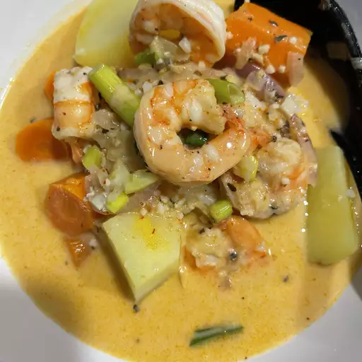

Red Thai Curry Soup

The Soup:
Thai red curry soup calls for jasmine rice instead of rice noodles. We puree the soup before adding onions and herbs for a smooth, rich texture. Adding a squeeze of lemon juice
at the end brightens up this traditionally-flavored soup. Serve this as a light dinner entree, or pair it with another protein or vegetable side for a heartier meal.
Ingredients:
- 2 tablespoons olive oil, divided
- 18 large shrimp, peeled and deveined
- ¼ teaspoon kosher salt
- ¼ teaspoon ground black pepper
- 1 large red bell pepper, diced
- 1 medium onion, diced
- 3 cloves garlic, minced
- 3 tablespoons red curry paste
- 4 cups unsalted chicken stock
- 1 (13.5 ounce) can light coconut milk
- 1 (8.8 ounce) pouch UNCLE BEN'S® READY RICE® Jasmine
- 2 teaspoons fish sauce
- 2 teaspoons brown sugar
- 3 green onions, thinly sliced
- ¼ cup fresh cilantro leaves, chopped
- ¼ cup fresh basil leaves, chopped
- 1 tablespoon fresh lime juice
Steps
Step 1
Heat 1 tablespoon olive oil in a large Dutch oven over medium heat. Season shrimp with salt and pepper.
Add shrimp to pot and cook 2 to 3 minutes or until pink, turning halfway through. Set aside.Step 2
Stir in curry paste and ginger. Cook 1 minute, or until fragrant.
Step 3
Step 4
Stir in fish sauce and brown sugar. Remove from heat.
Step 5
covering opening with a dish towel, and blend until pureed. Return soup to pot.
Step 6
Serve immediately.